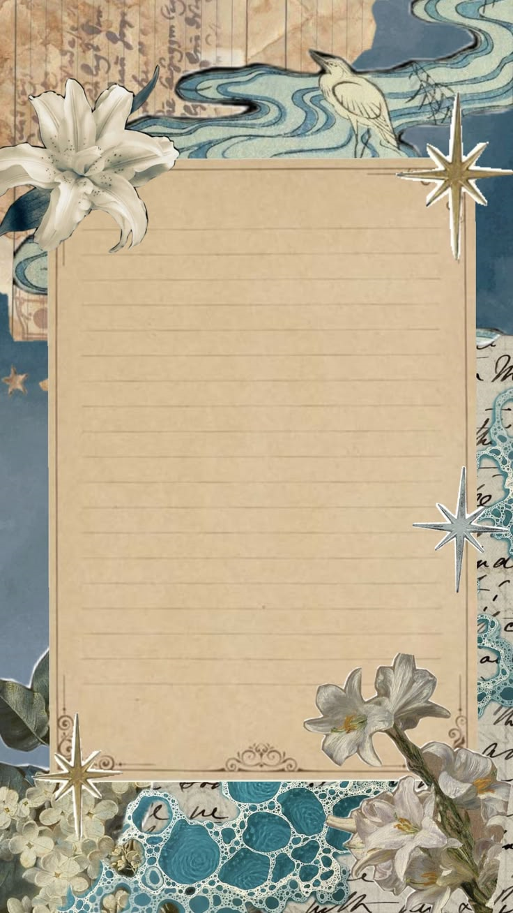

En primer lugar, espero que te guste esta página. La hice pensando en cosas que me recuerdan a ti.
Recuerdo las veces que creabas cosas para mí, y me hacías sentir especial. También la página que me mostraste alguna vez, y sinceramente, me gustó mucho. Por eso, decidí hacer algo sim[...]
En tu cumpleaños y siempre, te deseo lo mejor. Que tengas un bonito día, que tus deseos se cumplan y que te vaya bien tanto ahora como en tus planes a futuro.